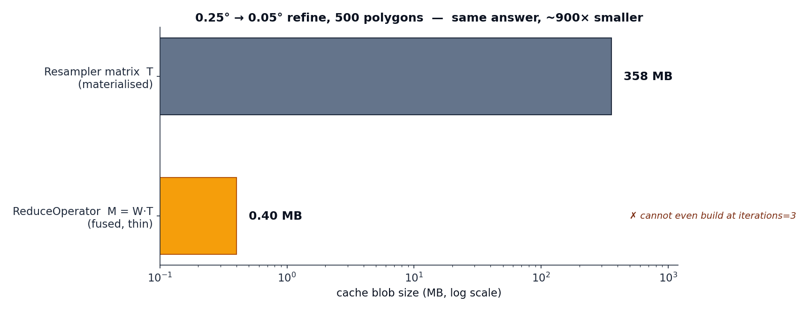

The fused reduce operator¶
When you reduce over a refined grid, two linear maps stand between the source data and the answer: a resampler \(\mathbf{T}\) (source → fine grid) and a stencil \(\mathbf{W}\) (fine grid → polygons).
The naive route builds \(\mathbf{T}\), applies it to make a fine field, then applies \(\mathbf{W}\). But \(\mathbf{T}\) spans the entire fine grid — millions of cells — even though only the handful of cells under each polygon will ever survive the multiplication by \(\mathbf{W}\). That is enormous wasted work and memory.
The fusion¶
By associativity, the two operators compose into one:
\(\mathbf{M}\) acts directly on the source grid. It has only \(N_\text{polygons}\) rows,
so it is tiny — and crucially, geohalo builds it without ever materialising
\(\mathbf{T}\). FactoredResampler.fuse_left(W) pushes the thin \(\mathbf{W}\) through
the resampler's factored form:
and the series is accumulated by right-applying \(\mathbf{G}\) to the thin \((\mathbf{W} - \mathbf{W}\mathbf{P}\mathbf{A})\). Every intermediate keeps only \(N_\text{polygons}\) rows, so the fusion scales to high iteration counts and huge target grids where \(\mathbf{T}\) itself would not fit in memory.
flowchart LR
subgraph naive ["naive: build the fine grid"]
direction LR
X1["source x"] -->|"T (N_target × N_source)"| FINE["fine field<br/>millions of cells"]
FINE -->|"W"| A1["a"]
end
subgraph fused ["fused: one thin operator"]
direction LR
X2["source x"] -->|"M = W·T<br/>(N_poly × N_source)"| A2["a"]
endWhy it matters: the size win¶
The fused operator is the most compact thing to cache, and — unlike \(\mathbf{T}\) — its size does not grow with target resolution or iteration count.

ReduceOperator¶
ReduceOperator.compute(stencil, source_lat, source_lon, iterations=…) returns the
stencil's own matrix unchanged when the source grid already matches the stencil grid
(no resample needed), and otherwise calls fuse_left. Applying it uses this fused
matrix directly on the source grid:
import geohalo as ghl
op = cache.get_or_compute_reduce_operator(
stencil, da.latitude.values, da.longitude.values, iterations=3,
)
out = ghl.reduce_with_operator(da, op) # (..., geom); also accepts how="sum"
Matrix rows, row_sums, and output values follow stencil.keys, which preserves
the caller's polygon order. Cache hits return that same requested order even
when another caller populated the entry in a different order.
For a global source, pass period=360 to ReduceOperator.compute or
cache.get_or_compute_reduce_operator. Fusion uses cyclic longitude interpolation
and parent assignment; applying the resulting operator needs no extra flag.
Restricted plans inherit its seam-crossing halo and cache identity. The stencil
grid and polygons themselves are unchanged; see
periodic longitude.
Coefficient and result dtypes¶
Storage precision and result dtype are independent, opt-in choices:
import numpy as np
stencil = cache.get_or_compute_stencil(
target_lat, target_lon, geoms, dtype=np.float32,
)
op = cache.get_or_compute_reduce_operator(
stencil, da.latitude.to_numpy(), da.longitude.to_numpy(), dtype=np.float32,
)
out = ghl.reduce_with_operator(da, op, preserve_dtype=True)
# For a float32 da: op.matrix.dtype == out.dtype == np.dtype("float32")
# op.row_sums.dtype remains float64.
Both builders default to dtype=np.float64 and accept float32 or float64 (also
as NumPy dtype objects or equivalent strings). Request float32 on each builder
whose coefficients you want stored in float32; ReduceOperator.compute defaults
to float64 even for a float32 stencil. A RestrictedOperator inherits its fused
operator's dtype. Coordinate and normalizer arrays stay float64. Stencil row sums
accumulate the stored coefficients in float64; fused operators retain those
normalizers rather than summing their potentially signed coefficients.
Float32 halves the coefficient buffer, not the entire CSR object: index arrays are unchanged. Geometry extraction and fusion still use float64 work arrays before casting, so build-time peak memory is not halved. Casting does not reorder or merge sparse entries. Coefficient dtype is included in cache keys; float64 input digests are unchanged. NPZ cache migration requires a one-time rebuild of older pickle entries.
preserve_dtype=False keeps the previous NumPy promotion rules. With a float32
matrix and float32 values, sums are float32, but means normally become float64
because normalizers are float64. preserve_dtype=True returns floating-point
inputs in their own dtype, including means and skipna=True results. It does
not downcast a float64 matrix or change accumulation/normalization precision.
Integer and boolean inputs retain normal promotion, so means are floating-point,
not truncated integers. Dataset variables are handled independently; non-spatial
variables pass through unchanged.
The flag is supported by reduce, reduce_with_stencil, both prebuilt xarray
reducers, ReduceOperator.apply_grid, and RestrictedOperator.apply. Results
are allocated in the chosen dtype; projection temporaries stay bounded by a
slice or small block rather than a full float64 result batch. The stencil's
masked/weighted path processes floating inputs one slice at a time when enabled.
preserve_dtype is apply-time only and does not require another cached operator.
Float32 coefficients or results lose precision and range. Representative tests
agree with float64 within 1e-5 relative error, but this is not a universal
bound: signed cancellation, small surviving denominators, and extreme values
can amplify errors or overflow. Keep float64 when those risks matter. Returning
float64 results from float32 coefficients cannot recover discarded coefficient
precision. reduce still builds float64 coefficients; prebuild a stencil/operator
to opt into float32 storage.
Opt-in source-cell NaN handling¶
Contributing NaNs propagate by default, preserving existing behavior. Pass
skipna=True to omit missing source cells and renormalize each mean over
the surviving signed weights:
out = ghl.reduce_with_operator(da, op, skipna=True)
totals = ghl.reduce_with_operator(da, op, how="sum", skipna=True)
An all-missing zone has a NaN mean and a zero sum. Means also return NaN when the surviving signed weight is zero or negative. Only NaNs are excluded; infinities are not treated as missing. Sums retain the original weights and do not extrapolate the total over missing area.
Without resampling, this agrees with the unweighted masked stencil path.
With fused resampling, it is a different operation from resampling first
and then masking target cells. Negative resampling coefficients are retained:
a positive surviving denominator does not guarantee a bounded or well-conditioned
mean, especially if signed weights nearly cancel. No clipping is applied.
For target-cell masking or per-cell weights, use
reduce_with_stencil.
The same opt-in is available on reduce_with_restricted_operator and
RestrictedOperator.apply. Low-level callers can use
op.apply_grid(values, how="mean", skipna=True); apply_grid still defaults
to an unnormalized sum, unlike the higher-level reducers.
Weighted by counts on a fine lattice¶
ReduceOperator.compute_weighted builds an operator whose entries are counts
(for example people per 30 arc-second pixel) instead of covered area. With zones
\(i\), source cells \(j\), pixels \(k\) of a fine lattice, \(p_k\) the count of
pixel \(k\) and \(c_{ik}\) the planar fraction of pixel \(k\) inside zone \(i\):
row_sums are float64 sums of the stored coefficients, so
apply_grid(x, how="mean", skipna=True) answers
\(\sum_j M_{ij} x_j \,/\, \sum_{j\,\text{present}} M_{ij}\). A border cell counts
only the pixels on the zone's side of the border.
import geopandas as gpd
import numpy as np
from shapely.geometry import box
import geohalo as ghl
pixel = 1 / 120 # 30 arc-seconds
weight_lat = 48.0 - (np.arange(720) + 0.5) * pixel # 42-48 N, north to south
weight_lon = 2.0 + (np.arange(720) + 0.5) * pixel # 2-8 E
people = np.ones((weight_lat.size, weight_lon.size), dtype=np.float32)
source_lat = np.arange(49.875, 40.0, -0.25) # 0.25 degree cells
source_lon = np.arange(0.125, 10.0, 0.25)
zones = gpd.GeoSeries([box(3.1, 43.2, 6.9, 46.8)], index=["zone"])
op = ghl.ReduceOperator.compute_weighted(
zones, weight_lat, weight_lon, people, source_lat, source_lon, dtype=np.float32,
)
field = np.random.default_rng(0).normal(size=(source_lat.size, source_lon.size))
mean = op.apply_grid(field, descending=True, how="mean", skipna=True)
The window of counts is regular, its latitude in either order and its longitude
ascending. Every source cell edge inside the window must be a pixel edge, to
within a thousandth of a pixel, so the pixels sum exactly into cells: a pixel
goes to the cell that holds its centre, half a pixel from either edge, and a
float32 0.1° grid nests in a 30″ lattice as its float64 twin does. A grid that
does not nest is refused with ValueError, as is a geometry whose bounds leave
the window. A geometry that covers no area of the source grid inside the window
raises EmptyOverlapError. A float32 or float64 window is read in place, never
copied, in either latitude order and with any strides (a slice of a larger
raster, for example); other dtypes and masked arrays are converted first.
Counts, not densities. The coverage \(c_{ik}\) is exactextract's planar
fraction of a pixel, never multiplied by an area: a count already carries the
pixel's size. Planar and spherical fractions inside one pixel differ by at most
\((\Delta\varphi_\text{pixel}/2)\tan|\varphi|\), about \(7\times10^{-5}\tan|\varphi|\)
for 30″ pixels, and only on partially covered pixels. Against
compute:
- uniform counts (\(p_k = 1\)) reproduce, row-normalised, the planar stencil
(
spherical_correction=False); - counts proportional to pixel area (a uniform density) reproduce
computeon fully covered cells and on row sums; - on partially covered cells they differ by at most
\((\Delta\varphi_\text{cell}/2)\tan|\varphi|\) relative (0.22 % for 0.25° cells
at 45°), which is
compute's own planar approximation inside a coarse cell.
Missing and empty pixels. NaN and masked counts are 0; negative or infinite
counts raise ValueError, as does a coefficient that overflows the operator's
dtype (float32 counts summing past 3.4e38 in a cell, say). Pixels with a zero or
NaN count never leave exactextract, so the Python-side cost is proportional to
inhabited pixels. A geometry over pixels that all weigh 0 has a row of zeros (no
stored entries): its mean is NaN with skipna=True, and with skipna=False it
is 0/0, NaN with NumPy's RuntimeWarning: invalid value encountered in divide.
Off the source grid, and longitude frames. A pixel counts in the source cell
that holds its centre. Without period, the window and the source longitudes are
read in one frame, and the part of a geometry outside the source grid is not
counted, as with compute: a pixel whose centre is off the grid is dropped with
its count. That is what a regional source grid needs, but on a 0..360 grid it
means a zone across 0° counts only its eastern part. period=360 moves each
pixel centre by a multiple of 360 into the source grid's frame before it is
assigned, so a window in -180..180 reaches a 0..360 grid, and the nesting and
overlap checks look at the grid's copies 360° apart. period is validated as in
compute and is part of the digest; geometries are never moved, so they stay in
the window's frame.
Build memory. Besides the caller's window, a build holds a copy of the window over one zone's bounding box at a time (exactextract makes it while it reads the zone), or, once it has, about 24 bytes per inhabited pixel under the 16 zones of one exactextract call and about 40 more per inhabited pixel of the largest zone; and about 40 bytes per stored entry. It does not grow with the number of zones. See the benchmark.
Reweighting by cell¶
op.reweight(cell_weights, descending=False) scales each column of an existing
operator by its cell's weight (cell_weights has the source grid's shape;
descending=True reads it north to south). NaN and masked weights are 0;
negative or infinite weights on cells the operator reads raise ValueError, as
does a scaled coefficient that overflows the operator's dtype. Entries that
become 0 are dropped (so a restricted plan never reads
them) and row_sums are recomputed. Only the cells the operator reads are looked
at, and the digest covers exactly those weights.
With \(W_j\) the count in cell \(j\) and \(a_j\) its spherical area,
ReduceOperator.compute(stencil, ...).reweight(W / a) is the cell-mean density
weighting \(M^0_{ij} W_j / a_j\). When the stencil is on the source grid, that
is the same mean as reduce_with_stencil(..., weight_key=...) with
that density as the weight. When compute fuses a resampler (a stencil on a
finer grid), reweight scales the source cells after fusion while weight_key
weights the stencil's own cells, and the two differ. Either way it assumes the
count is uniform within a cell, which compute_weighted does not.
Stacking batches¶
ReduceOperator.concat(operators) stacks operators' rows in order. They must
share one source grid, coefficient dtype, iteration count and key names, and no
key may repeat. Zones built in batches, each over its own window, stack into the
operator built at once over one window. The stacked digest covers the parts'
digests, so it depends on the batching.
The three methods return ordinary ReduceOperators: they apply, restrict and
serialize like any other.
Application memory¶
reduce_with_operator reads values in their stored latitude order. For large
grids, it gathers the source cells referenced by the matrix and applies one
sparse-vector product per batch slice. The compact column mapping is prepared
once per operator instance and reused, including across Dataset variables.
Operators that touch most cells use the full source slice. Small contiguous grids
use bounded batches to keep multiplication overhead low.
NaN-aware application processes one slice at a time. Clean slices use the cached normalizer and one sparse product; a masked mean uses a second product for its denominator. Masked sums still need only one. Masks and sanitized values are temporary per-slice arrays, never full-batch copies. Enabling this option does not change operator digests or require rebuilding caches.
Temporary dense storage therefore depends on one slice's contributing cells, rather than the total number of slices. The original matrix coefficient order and chosen matrix precision are preserved (float64 by default), including for float32 input. Canonical matrices retain their existing format; disk/Redis payloads use portable NPZ serialization.
This bounds the arithmetic's temporary memory; lazy inputs are still loaded in
full by this entry point. To read only contributing chunks, opt in to
RestrictedOperator and reduce_with_restricted_operator.
It's already your fast path¶
You rarely call this directly. reduce and reduce_with_stencil use exactly this
fusion internally for clean data: they build a ReduceOperator once and delegate to
reduce_with_operator. The reason to cache the operator yourself is repetition — if
you apply the same (stencil, source grid, iterations) across many grid slices (time
steps, members, bands) or repeated runs, caching the fused operator skips even the (cheap) fusion step and
loads a sub-millisecond blob. See caching.